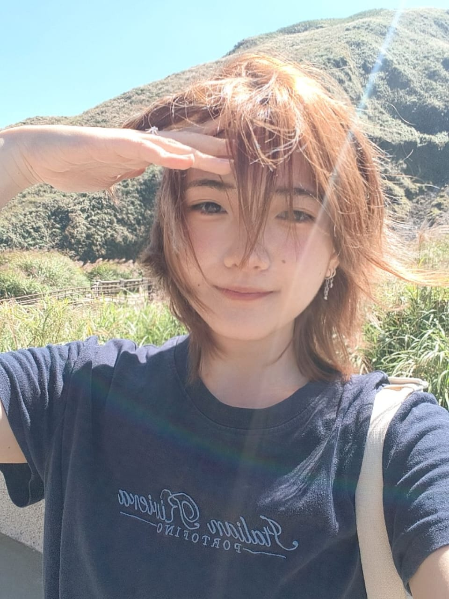

Hi, my name is Tan Wen Jing, but you can also call me Louise. I’m studying for a Diploma in Digital Media at Dasein Academy of Art. I enjoy dressing stylishly and have a strong passion for making myself feel beautiful and confident. Choosing outfits and expressing myself through fashion is one of my favorite hobbies.
I’m also an introvert, although I can sometimes set that aside when I need to. Life can be challenging, and getting through difficult moments isn’t always easy. Still, I believe there is always a way forward. I try to stay hopeful, keep learning, and take things one step at a time. I hope to continue growing as a person and developing my creativity as I work toward my goals.
